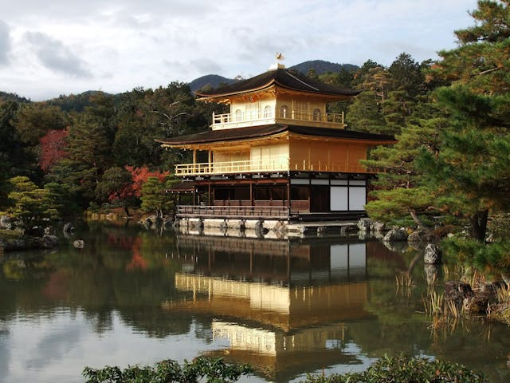

Kinkaku-ji, also known as the Golden Pavilion, is one of Kyoto's most iconic landmarks and a symbol of Japan's cultural heritage. Located in northern Kyoto, this Zen Buddhist temple is renowned for its stunning architecture and serene surroundings. The temple's top two floors are entirely covered in gold leaf, creating a breathtaking reflection on the surface of the mirror-like pond, Kyōko-chi, that surrounds it. Originally built in 1397 as a retirement villa for the shogun Ashikaga Yoshimitsu, it was later converted into a temple by his son. The meticulously landscaped gardens and the harmony of nature and structure exemplify the beauty of traditional Japanese design. Despite being burned down and rebuilt multiple times, most recently in 1955, Kinkaku-ji continues to attract millions of visitors annually, offering a timeless glimpse into Japan's rich history and artistic legacy. 